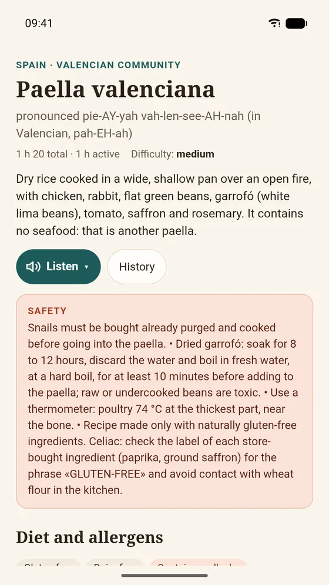
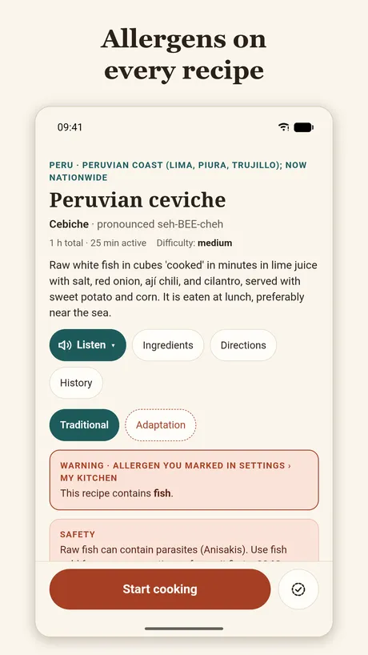

홈
세계의 요리 한 접시로 시작하세요.
홈 화면에는 사진과 유래가 담긴 오늘의 요리가 나옵니다. 이름이나 설명으로 검색하거나 추천 레시피를 둘러보세요.

세계의 레시피
세계 곳곳의 전통 레시피. 레시피마다 사진, 재료, 단계별 조리법, 알레르기 유발 성분과 요리의 이야기가 담겨 있습니다. 모두 휴대폰 안에, 인터넷과 계정 없이.
무료 다운로드 · 월간 또는 연간 구독, 또는 한 번 구매로 전체 열기
앱은 포르투갈어, 영어, 스페인어로 제공됩니다.

요리를 좋아하고, 시작하기 전에 요리를 먼저 알고 싶은 분을 위해 만들었습니다.
홈
홈 화면에는 사진과 유래가 담긴 오늘의 요리가 나옵니다. 이름이나 설명으로 검색하거나 추천 레시피를 둘러보세요.
레시피
레시피마다 사진, 재료, 조리법, 알레르기 유발 성분과 요리의 이야기가 있습니다. 인분을 조절하고 미터법 또는 미국식 계량을 고르세요.
요리 모드
요리 모드에서는 한 번에 한 단계만 큰 글씨로 보여 주고, 요리하는 동안 타이머가 계속 화면에 보입니다.

소리로 듣기
기기의 음성이 레시피를 소리 내어 읽어 주니 손이 자유롭습니다.

미리보기
일부 레시피는 무료로 전체가 열립니다. 나머지는 사진, 이야기, 알레르기 유발 성분을 미리보기로 보여 줍니다.

집에 있는 재료
주방에 있는 재료를 알려 주면 SaborMundi가 만들 수 있는 레시피와 부족한 재료를 보여 줍니다. 채식, 비건, 글루텐 프리, 유제품 프리로 거를 수 있습니다.

장보기 목록
고른 레시피의 재료를 코너별로 정리된 장보기 목록에 모으고, 필요한 것을 더 추가하세요.

내 주방
함께 사는 사람의 알레르기 유발 성분을 표시하세요. 그 성분이 든 레시피는 위쪽에 경고를 띄우고 해당 재료를 강조합니다.

다운로드는 무료이고, 일부 레시피는 전체가 열려 있어 앱을 먼저 써 볼 수 있습니다. 월간 또는 연간 구독, 또는 한 번 구매로 모든 레시피가 열립니다.
앱 화면(영어).




계정도, 광고도, 데이터 수집도 없습니다. SaborMundi는 스스로 인터넷에 연결하지 않습니다. 표시한 내용은 기기에 남고, 레시피나 목록을 공유하거나 백업을 내보낼 때만 기기 밖으로 나갑니다.
다운로드는 무료이고 일부 레시피는 비용 없이 전체가 열립니다. 나머지는 사진, 이야기, 알레르기 유발 성분을 미리보기로 보여 줍니다. 월간 또는 연간 구독, 또는 한 번 구매로 모두 열립니다. 광고는 없습니다.
네. 레시피, 검색, 요리 모드, 장보기 목록 모두 오프라인에서 작동합니다. 구매만 스토어를 거칩니다.
포르투갈어, 영어, 스페인어입니다.
아니요. 가입이 없습니다. 데이터를 새 휴대폰으로 옮기려면 백업을 내보내세요.
레시피에는 주요 알레르기 유발 성분과 안전 안내가 있지만 제품과 재료는 다를 수 있습니다. 항상 제품 라벨을 확인하고 의사나 영양사의 안내를 따르세요.
Android에서 무료로 받으세요.